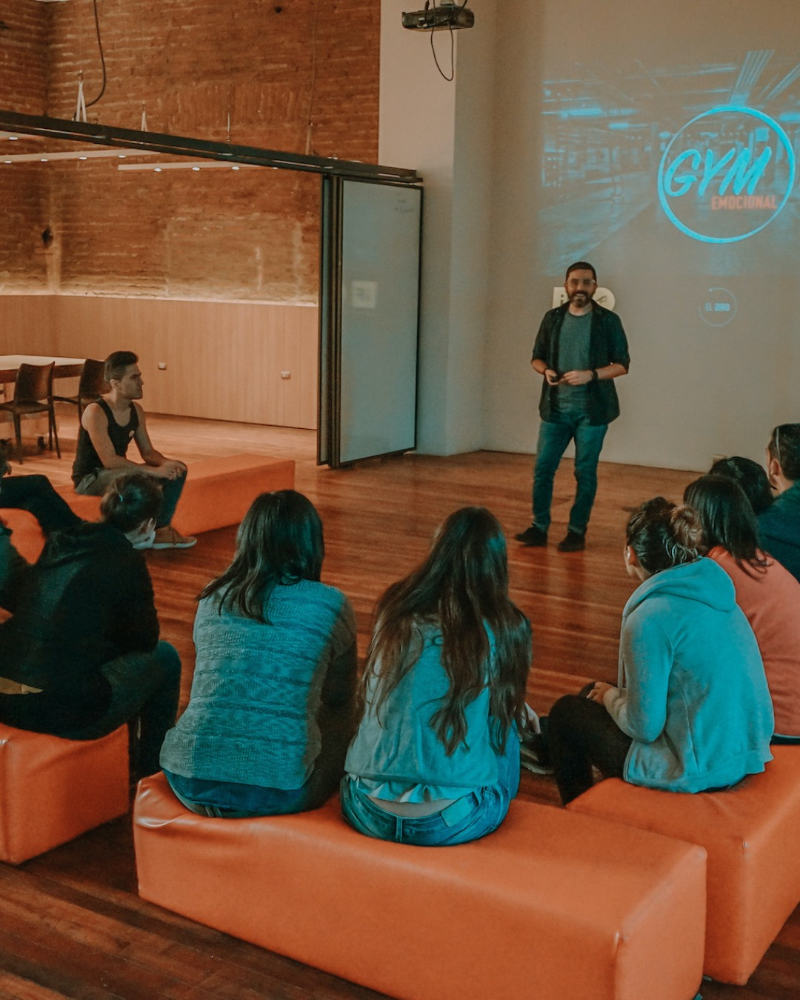
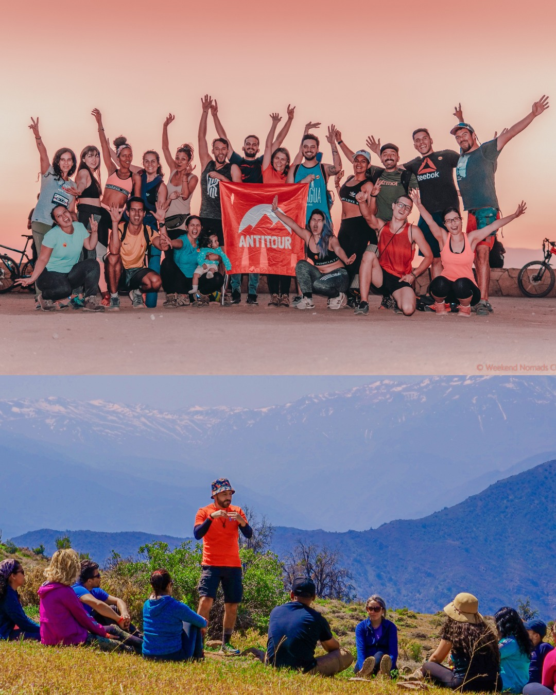
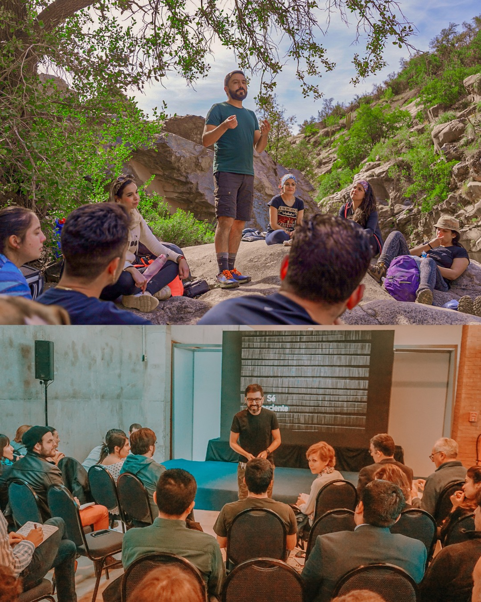
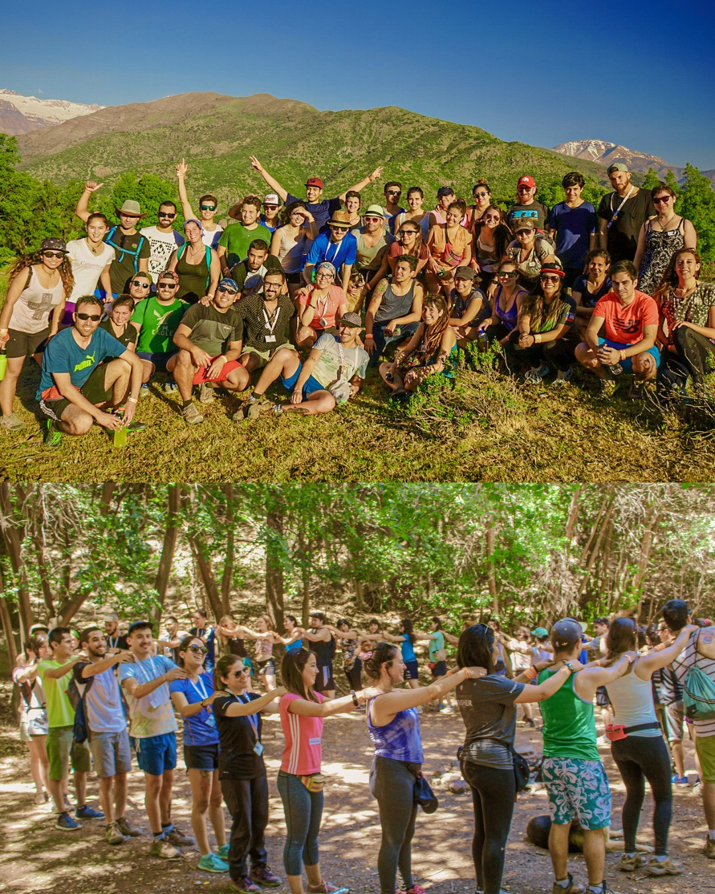

Cómo se vive
Presencial, progresivo y social. Te expones, te ves, te sostienen y sostienes a otros.
BetaGym es un sistema para transformar lo que sabes en lo que haces.

Entiendes mucho, decides, a veces incluso te motivas… y aun así vuelves al mismo punto.
Es un sistema diseñado desde psicología, ciencia del comportamiento, neurociencia, mindfulness, coaching y gamificación para algo muy concreto: convertir conciencia en capacidad.
Presencial, progresivo y social. Te expones, te ves, te sostienen y sostienes a otros.
Dirección, regulación emocional, decisiones, relaciones, energía y acción sostenida.
Dentro de BetaGym puedes trabajar un cambio personal, una decisión importante o un proyecto propio mientras el grupo te ayuda a no volver al mismo punto.
Antes de convertirse en BetaGym, este sistema se probó en el mundo real a través de experiencias vivenciales de alto impacto.
Antitour fue la base: naturaleza + cuerpo + mente + emoción + experiencias gamificadas de alto impacto. Las personas no solo vivían una experiencia… se transformaban.



Esto es para ti si estás dispuesto a trabajar en serio, te cansaste de repetir patrones, quieres estructura real y buscas crecimiento con otros. No es para curiosos ni para inspiración momentánea.
Si estás listo para ver si este sistema es para ti, el primer paso es claro.